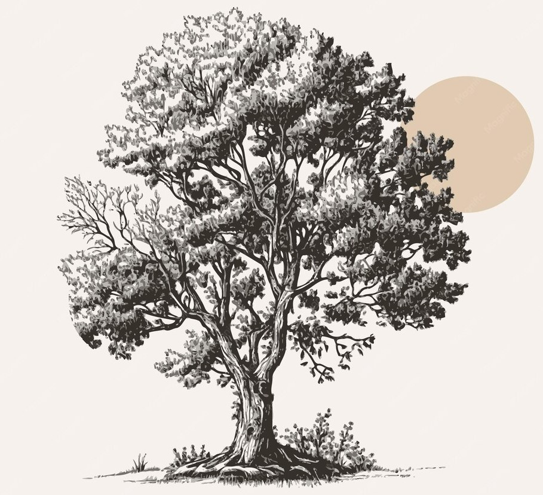

LOS FRUTOS DEL ESFUERZO COLECTIVO

En lo cultural
cambio de mentalidad hacia la cooperación y la confianza.

En lo social:
generación de empleo digno y redes de apoyo mutuo.
En lo económico:
sostenibilidad basada en relaciones estables y éticas.
En lo político:
fortalecimiento de una ciudadanía comprometida con la justicia y la equidad.